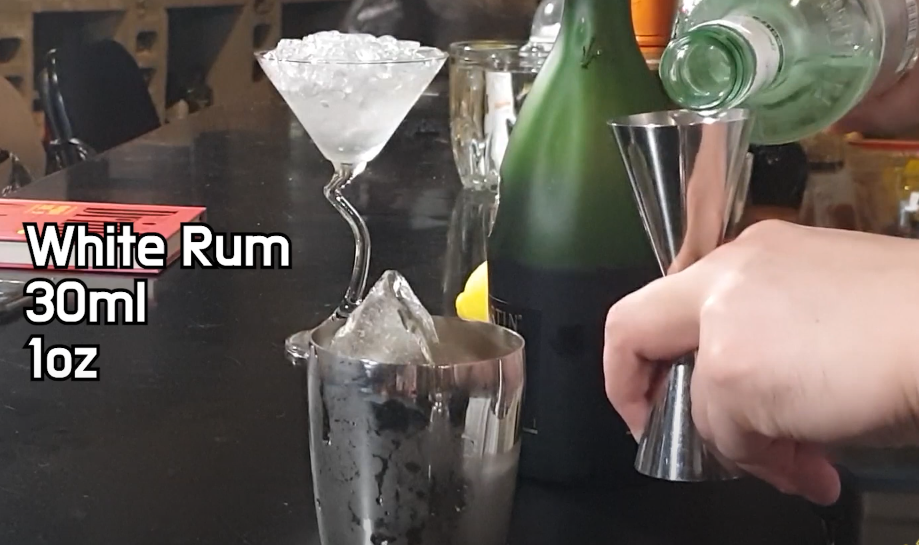

사이드카
| 글라스 | 기법 |
| 마티니 글라스 | 쉐이킹 |
| 가니쉬 | |
| 없음 | |
| 재료 | |
|
브랜디 1oz 코앵트로 또는 트리플섹 1oz 레몬 주스 1/4oz |
|
사이드카의 기본적인 뜻은 오토바이 옆에 달린 작은 ㅈ짐칸 또는 사람이 탈 수 있는 공간을 말합니다. 그럼 왜 칵텡리 이름이 사이드카 일까요? 이름의 유래에 대해서는 여러가지 가설이 있는데요. 그중 한가지 가설은 1933년 프랑스파리의 '허리즈 뉴욕'이라는 술집의 바텐더 허리 멕켄혼이 만들었다는 가설도 있습니다. 당시 사이드카에 여성을 태워서 다니는 경우가 많았다고 하는데 만약 사고가 날 경우에 운전자가 본능적으로 자기 방어를 목적으로 사고가 나는 방향을 사이드카 부분으로 방향을 돌리기 쉽기 때문에 옆에 타고 있던 여성들의 피해가 많았다고 합니다. 그래서 술을 많이 못마시는 '여성들도 쉽게 마셔서 피해를 많이 본다'는 의미를 익살스럽게 표현해서 만든 이름이 사이드카라고 하는군요.

허니문
| 글라스 | 기법 |
| 마티니 글라스 | 쉐이킹 |
| 가니쉬 | |
| 없음 | |
| 재료 | |
|
애플 브랜디 3/4oz D.O.M 베네딕틴 3/4oz 트리플섹 1/4oz 레몬 주스 1/2oz |
|
'신혼여행'이라는 이름이 붙은 칵테일입니다. '농부의 딸'이라는 재미있는 별명을 갖고 있어요. 브랜디 자체의 달콤한 향이 전해져 신혼의 달콤한 분위기에 잘 맞는다고 합니다. '농부의 부인'이라는 칵테일도 있는데ㅛ, 애플 브랜디 2/3oz, 드라이 베르무트 1/3oz, 앙고스트라 비터스 1dash를 잘 저어 레몬 껍질로 마무리하는 레시피 입니다.
애프리콧 칵테일
이름에는 사워가 들어가지만 그렇게 신맛나는 칵테일은 아니다.

| 글라스 |
| 칵테일 글라스 |
| 기법 |
| 쉐이킹 |
| 가니쉬 |
| 없음 |

| 재료/레시피 |
|
1. 쉐이커에 애프리콧 브랜디 1 1/2oz를 넣는다. 2. 쉐이커에 진 1tsp을 넣는다. 3. 쉐이커에 레몬 주스 1/2oz를 넣는다. 4. 쉐이커에 오렌지 주스 1/2oz를 넣는다. 5. 모두 쉐이킹 한 후 칵테일 글라스에 따른다. |

비트윈 더 시트
| 글라스 |
| 마티니 글라스 |
| 기법 |
| 쉐이킹 |
| 가니쉬 |
| 없음 |
| 재료 |
|
코냑 1oz, 화이트 럼 1oz, 트리플섹 1oz, 레몬 주스 2/3oz |
| 1. 마티니잔에 얼음을 넣어 칠링한다. | |
| 2. 쉐이커에 얼음을 넣는다. | |
| 3. 코냑(브랜디) 1oz를 쉐이커에 넣는다. | |
| 4. 화이트럼 1oz를 쉐이커에 넣는다. |  |
| 5. 코인트루 1oz를 쉐이커에 넣는다. | |
| 6. 레몬주스 1/2oz를 쉐이커에 넣는다. | |
| 7. 쉐이킹 한다. | |
| 8. 잔에 따라주면 완성! |
비트윈 더 시트 이야기
침대속으로 들어간다는 뜻으로, 이름처럼 나이트캡(잘 때 마시는 술)에 적당한 음료이다. 단맛과 쓴맛의 중간으로써 먹기에 거부감이 없고, 오렌지 맛이 강한 화이트 퀴라소가 나이트캡에서는 빠질 수 없는 단향을 이끌어 낸다. 옛날부터 다양한 국가에서 사랑받고 있고, 일본에서는 젊은 사람은 별로 즐기지 않지만, 클럽 등의 호스테스가 좋아하는걸로 알려져 있다.

체리 블러썸
체리 블러썸은 1920년대에 일본 요코하마에 있는 파리라는 바에서 만들어진 칵테일이다. 당시 인기를 상당히 끌었는지 1930년에 출간된 사보이 칵테일북에도 실려있다.2. 쉐이커에 브랜디 1oz를 넣는다.
3. 체리 브랜디 1oz를 넣는다.
4. 오렌지 큐라소 1/2tsp을 넣는다.
5. 레몬주스 1/2tsp을 넣는다.
6. 그레나딘 시럽 1/2tsp을 넣는다. 7. 쉐이킹 한다.
8. 칵테일 글라스에 따라주면 완성~!
브랜디 1oz
체리 브랜디 1oz
오렌지 큐라소 1/2tsp

레몬 주스 1/2tsp
그레나딘 시럽 1/2tsp